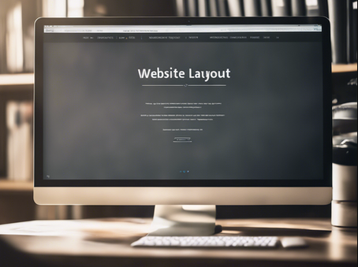

Are you ready to launch your website and establish your online presence? Building a website can seem like a daunting task, but with the right guidance, you can create a professional and engaging site in no time. Today, we will discuss the essential steps to help you launch your website successfully.

Define Your Purpose and Audience:
Before you start creating your website, it is crucial to define your purpose and target audience. What is the main goal of your website? Who are you trying to reach? Understanding your purpose and audience will help you tailor your content and design to meet the needs of your visitors.
Choose a Domain Name and Hosting Provider:
Selecting a domain name that reflects your brand and is easy to remember is key to building a strong online presence. Once you have chosen a domain name, you will need to select a reliable hosting provider to ensure your website is always accessible to visitors.
Design Your Website:
When it comes to designing your website, simplicity is key. Choose a clean and professional design that is easy to navigate. Consider the layout, color scheme, and overall aesthetic to create a visually appealing site that represents your brand effectively.
Create High-Quality Content:
Content is king when it comes to attracting and retaining visitors. Create high-quality, valuable content that is relevant to your audience. Whether it's blog posts, articles, or multimedia content, make sure it is engaging and informative.
Test and Launch Your Website:
Before launching your website, thoroughly test it to ensure everything is functioning properly. Check for broken links, spelling errors, and overall responsiveness on different devices.
 How to Website
Home
Services
Blogs
Contact
How to Website
Home
Services
Blogs
Contact